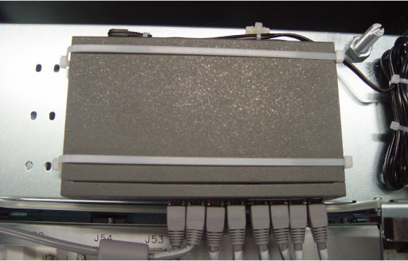

Operating Documentation
Direction 5181178-800, Rev# 16
BrightSpeed Select Service Methods Gen
Module Version 2.0, Version Date 8/28/09
Operating Documentation |
| Required Persons | Preliminary Reqs | Procedure | Finalization |
|---|---|---|---|
| 1 |
This procedure describes and illustrates the steps necessary to replace the Console Ethernet Switch (Illustration 1).
| Last revised: | 29 July 2009 |
Illustration 1: Console Ethernet Switch

| Item | Qty | Effectivity | Part# | Manufacturer | |
|---|---|---|---|---|---|
| Standard FE Toolkit | 1 | - | - | - | |
| Item | Qty | Effectivity | Part# | Manufacturer | |
|---|---|---|---|---|---|
| Console Network Switch (CNS) | 1 | - | 5264954 | - | |
| ||||
| ELECTROCUTION HAZARD | ||||
| HIGH VOLTAGE PRESENT | ||||
| USE PROPER LOCKOUT / TAGOUT PROCEDURES BEFORE REPLACING THE COMPONENTS. |
| ||||
| CRUSH HAZARD | ||||
| THE CONSOLE NETWORK SWITCH IS LOCATED oN THE icom board OF THE TIO CONSOLE. ACCESS TO THE CNS IS IN A CONFINED SPACE. | ||||
| TAKE CARE NOT TO PINCH FINGERS OR HANDS IN CONSOLE CHASSIS BRACKETS. |
| ||||
| FOLLOW ALL REQUIRED SAFETY AND PPE PROCEDURES CUSTOMARY FOR YOUR ORGANIZATION WHEN WORKING ON THIS PRODUCT. | ||||
| Condition | Reference | Effectivity |
|---|---|---|
Access to the Operator Console is required. Make sure adequate space is available on console table top. | - | - |
Only trained service personnel should service the GE CT Scanner. | - | - |
Select one of the following methods to power off the Operator Console:
If applications are running, click the Shut Down icon and select Shut Down.
If applications are down, open a Unix shell using the Toolchest. Type: {ctuser@hostname} halt and press <Enter>.
The Operator Console monitor will display a System Halted message when it is acceptable to power off the Operator Console.
Power OFF the Operator Console Switch at the front panel. (See Illustration 2.)
Illustration 2: Console Power Switch

Perform prescribed Lockout/Tagout procedure. For added protection, disconnect the Twist-N-Lock Main Power Cable from the rear of the console.
Remove the side and top Operator Console Covers per prescribed cover removal procedure.
Remove the Ethernet network cable connections to the CNS being replaced.
| NOTE: | Verify that all cables are labeled and clearly marked; if necessary, add a label for clarity. |
To allow the removal of the CNS from the console, cut of the two belts of the Ethernet Switch.
Remove Ethernet Switch from top of console.
Slide the replacement CNS into the Operator Console from the front.
Reinstall the two belts at both side of Ethernet Switch and verify it can be fixed the Switch.
Mount the power cord to the rear of the console.
Reinstall the Ethernet cable connection(s) to their original locations according to all cables are labeled and clearly marked.
| NOTE: | FOR PROPER OPERATION, IT IS CRITICAL THAT ALL ETHERNET CABLES BE PLUGGED INTO SPECIFIC LOCATIONS ON THE CNS. |
For cabling details, refer to TIO Console Schematic, click PDF to view scalable PDF version of the schematic.
to view scalable PDF version of the schematic.
Remove Lockout Tagout protection applied earlier.
Power ON the Operator Console Switch at the console front panel.
Visually verify the CNS front panel Power LED is illuminated.
Visually verify that all appropriate Port LEDs show active links. The CPU LED should be blinking during normal operation.
Refer to System Scanning Test to confirm proper operation.
Reinstall Console Side and Top Covers.